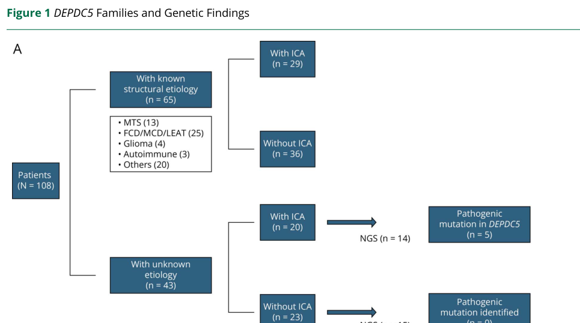

Familial focal epilepsy with variable foci is an autosomal dominant genetic focal epilepsy syndrome in which affected relatives have seizures that arise from different cortical regions, while each person's semiology is usually consistent. The best-established molecular mechanism is loss of GATOR1 complex function through DEPDC5, NPRL2, or NPRL3 variants, causing impaired restraint of mTORC1 signaling. Presentations range from nonlesional focal epilepsy with normal structural MRI to drug-resistant focal epilepsy associated with focal cortical dysplasia.
Ask a research question about Familial Focal Epilepsy With Variable Foci. OpenScientist will conduct autonomous deep research using the Disorder Mechanisms Knowledge Base and PubMed literature (typically 10-30 minutes).
Do not include personal health information in your question. Questions and results are cached in your browser's local storage.
name: Familial Focal Epilepsy With Variable Foci
creation_date: "2026-05-10T18:43:00Z"
updated_date: "2026-05-10T19:45:18Z"
category: Mendelian
description: >-
Familial focal epilepsy with variable foci is an autosomal dominant genetic
focal epilepsy syndrome in which affected relatives have seizures that arise
from different cortical regions, while each person's semiology is usually
consistent. The best-established molecular mechanism is loss of GATOR1 complex
function through DEPDC5, NPRL2, or NPRL3 variants, causing impaired restraint
of mTORC1 signaling. Presentations range from nonlesional focal epilepsy with
normal structural MRI to drug-resistant focal epilepsy associated with focal
cortical dysplasia.
disease_term:
preferred_term: familial focal epilepsy with variable foci
term:
id: MONDO:0020310
label: familial focal epilepsy with variable foci
synonyms:
- FFEVF
- familial partial epilepsy with variable foci
- epilepsy, familial focal, with variable foci
parents:
- Epilepsy
inheritance:
- name: Autosomal dominant
inheritance_term:
preferred_term: Autosomal dominant inheritance
term:
id: HP:0000006
label: Autosomal dominant inheritance
penetrance: INCOMPLETE
expressivity: VARIABLE
description: >-
Familial focal epilepsy with variable foci is inherited in an autosomal
dominant pattern, but penetrance is incomplete and expressivity varies
across relatives.
evidence:
- reference: DOI:10.1038/ng.2599
reference_title: Mutations in DEPDC5 cause familial focal epilepsy with variable foci.
supports: SUPPORT
evidence_source: HUMAN_CLINICAL
snippet: >-
Autosomal dominant familial focal epilepsy with variable foci (FFEVF) is
notable because family members have seizures originating from different
cortical regions.
explanation: The DEPDC5 discovery paper describes the autosomal dominant familial syndrome and its variable cortical foci.
- reference: DOI:10.1046/j.1528-1157.2003.62302.x
reference_title: "Familial partial epilepsy with variable foci in a Dutch family: clinical characteristics and confirmation of linkage to chromosome 22q."
supports: SUPPORT
evidence_source: HUMAN_CLINICAL
snippet: >-
Clinical characteristics and results of EEG, computed tomography (CT), and
magnetic resonance imaging (MRI) were evaluated in a family with autosomal
dominantly inherited partial epilepsy with apparent incomplete penetrance.
explanation: The Dutch family study explicitly supports autosomal dominant inheritance with incomplete penetrance.
progression:
- phase: Variable onset focal seizures
age_range: infancy to adulthood
notes: >-
Onset can range from infancy through adulthood. In published families,
seizure focus and severity vary among relatives, while each individual's
seizure pattern is generally stable.
evidence:
- reference: DOI:10.1046/j.1528-1157.2003.62302.x
reference_title: "Familial partial epilepsy with variable foci in a Dutch family: clinical characteristics and confirmation of linkage to chromosome 22q."
supports: SUPPORT
evidence_source: HUMAN_CLINICAL
snippet: Age at onset ranged from 3 months to 24 years.
explanation: This family report demonstrates the wide age-at-onset range.
- reference: DOI:10.1371/journal.pone.0284924
reference_title: The clinical features of familial focal epilepsy with variable foci and NPRL3 gene variant.
supports: SUPPORT
evidence_source: HUMAN_CLINICAL
snippet: >-
Patients with NPRL3: c.1137dupT variant had a wide range of onset age (4
months to 31 years), diverse seizure types, variable foci (frontal
lobe/temporal lobe), different seizure times (day/night) and frequencies
(monthly/seldom/every day), different therapeutic effects (refractory
epilepsy/almost seizure free), normal MRI, and abnormal EEG (epileptiform
discharge, slow wave).
explanation: This NPRL3 family series supports variable onset, foci, seizure timing, and clinical course.
- phase: Drug-resistant lesion-associated focal epilepsy
notes: >-
A subset of DEPDC5-associated disease includes focal cortical dysplasia and
drug-resistant focal epilepsy, for which epilepsy surgery may be considered.
evidence:
- reference: DOI:10.1002/ana.24368
reference_title: Familial focal epilepsy with focal cortical dysplasia due to DEPDC5 mutations
supports: SUPPORT
evidence_source: HUMAN_CLINICAL
snippet: >-
Seven patients from 4 families with DEPDC5 mutations and focal epilepsy
associated with FCD were recruited and investigated at the clinical,
neuroimaging, and histopathological levels.
explanation: This study establishes DEPDC5-associated focal epilepsy with focal cortical dysplasia as a clinically important subset.
genetic:
- name: DEPDC5
association: Causal GATOR1 loss-of-function variant
gene_term:
preferred_term: DEPDC5
term:
id: hgnc:18423
label: DEPDC5
notes: >-
DEPDC5 encodes a GATOR1 subcomplex component that negatively regulates the
amino-acid sensing branch of mTORC1 signaling. Truncating and splice-altering
variants are a recurrent cause of FFEVF and related familial focal
epilepsies.
evidence:
- reference: DOI:10.1038/ng.2599
reference_title: Mutations in DEPDC5 cause familial focal epilepsy with variable foci.
supports: SUPPORT
evidence_source: HUMAN_CLINICAL
snippet: >-
Using exome sequencing, we detected DEPDC5 mutations in two affected
families. We subsequently identified mutations in five of six additional
published large families with FFEVF.
explanation: This directly supports DEPDC5 as a causal gene in FFEVF.
- reference: DOI:10.3389/fgene.2024.1414259
reference_title: A novel variation in DEPDC5 causing familial focal epilepsy with variable foci.
supports: SUPPORT
evidence_source: HUMAN_CLINICAL
snippet: >-
The results suggest that c.1217 + 2T>A variations in DEPDC5 might be the
genetic etiology for FFEVF in this pedigree.
explanation: A 2024 family report expands the DEPDC5 FFEVF variant spectrum.
- name: NPRL2
association: Causal GATOR1 loss-of-function variant
gene_term:
preferred_term: NPRL2
term:
id: hgnc:24969
label: NPRL2
notes: >-
NPRL2 encodes another GATOR1 subcomplex component. Reported splice-altering
variants can cause exon skipping and a familial focal epilepsy with variable
foci phenotype.
evidence:
- reference: DOI:10.1038/s10038-021-00969-z
reference_title: "A splicing variation in NPRL2 causing familial focal epilepsy with variable foci: additional cases and literature review"
supports: SUPPORT
evidence_source: HUMAN_CLINICAL
snippet: >-
Here, we describe a variant, 339+2T>C, inNPRL2identified by trio
whole-exome sequencing (WES) in a family.
explanation: This family report identifies an NPRL2 splice variant in FFEVF.
- reference: DOI:10.1038/s10038-021-00969-z
reference_title: "A splicing variation in NPRL2 causing familial focal epilepsy with variable foci: additional cases and literature review"
supports: SUPPORT
evidence_source: IN_VITRO
snippet: >-
This splicing variant that occurred at the 5′ end of exon 3 was confirmed
by minigene assays, which affected alternative splicing and led to exon 3
skipping inNPRL2.
explanation: Minigene assay evidence supports a loss-of-function splicing mechanism for the NPRL2 variant.
- name: NPRL3
association: Causal GATOR1 loss-of-function variant
gene_term:
preferred_term: NPRL3
term:
id: hgnc:14124
label: NPRL3
notes: >-
NPRL3 loss-of-function variants cause FFEVF3 and can show reduced penetrance,
variable seizure foci, and variable clinical severity among relatives.
evidence:
- reference: DOI:10.3389/fgene.2021.766354
reference_title: A Novel Loss-of-Function Mutation in the NPRL3 Gene Identified in Chinese Familial Focal Epilepsy with Variable Foci.
supports: SUPPORT
evidence_source: HUMAN_CLINICAL
snippet: >-
Whole exome sequencing confirms a novel pathogenic mutation in the NPRL3
gene (c316C>T; p. Q106*).
explanation: This supports NPRL3 as a causal FFEVF gene.
- reference: DOI:10.3389/fgene.2022.1054567
reference_title: "Identification of two rare NPRL3 variants in two Chinese families with familial focal epilepsy with variable foci 3: NGS analysis with literature review."
supports: SUPPORT
evidence_source: HUMAN_CLINICAL
snippet: >-
In family E1, the trio-WES analysis of the proband and her brother without
apparent structural brain abnormalities identified a heterozygous variant
in the NPRL3 gene (c.954C>A, p.Y318*, NM_001077350.3).
explanation: Additional family sequencing evidence supports NPRL3-related FFEVF3.
pathophysiology:
- name: GATOR1 Complex Loss and mTORC1 Disinhibition
description: >-
Loss-of-function variants in DEPDC5, NPRL2, or NPRL3 impair GATOR1 complex
regulation of mTORC1. The resulting excess mTORC1 signal transduction is a
plausible upstream mechanism for altered cortical development, neuronal
excitability, and focal seizure generation.
role: central_effector
genes:
- preferred_term: DEPDC5
term:
id: hgnc:18423
label: DEPDC5
- preferred_term: NPRL2
term:
id: hgnc:24969
label: NPRL2
- preferred_term: NPRL3
term:
id: hgnc:14124
label: NPRL3
cell_types:
- preferred_term: pyramidal neuron
term:
id: CL:0000598
label: pyramidal neuron
- preferred_term: GABAergic neuron
term:
id: CL:0000617
label: GABAergic neuron
biological_processes:
- preferred_term: TOR signaling
modifier: INCREASED
term:
id: GO:0031929
label: TOR signaling
locations:
- preferred_term: cerebral cortex
term:
id: UBERON:0000956
label: cerebral cortex
evidence:
- reference: DOI:10.3390/ijms25042068
reference_title: GATOR1 Mutations Impair PI3 Kinase-Dependent Growth Factor Signaling Regulation of mTORC1
supports: SUPPORT
evidence_source: IN_VITRO
snippet: >-
GATOR1 (GAP Activity TOward Rag 1) is an evolutionarily conserved
GTPase-activating protein complex that controls the activity of mTORC1
(mammalian Target Of Rapamycin Complex 1) in response to amino acid
availability in cells.
explanation: This cell-signaling study establishes the GATOR1-mTORC1 regulatory mechanism.
- reference: DOI:10.3390/ijms25042068
reference_title: GATOR1 Mutations Impair PI3 Kinase-Dependent Growth Factor Signaling Regulation of mTORC1
supports: SUPPORT
evidence_source: IN_VITRO
snippet: >-
NPRL2-L105P is a loss-of-function mutation that disrupts protein
interactions with NPRL3 and DEPDC5, impairing GATOR1 complex assembly and
resulting in high mTORC1 activity even under conditions of amino acid
deprivation.
explanation: This directly connects an epilepsy-linked NPRL2 variant to impaired GATOR1 assembly and increased mTORC1 activity.
- reference: DOI:10.3389/fgene.2021.766354
reference_title: A Novel Loss-of-Function Mutation in the NPRL3 Gene Identified in Chinese Familial Focal Epilepsy with Variable Foci.
supports: SUPPORT
evidence_source: IN_VITRO
snippet: >-
In addition, the expression of downstream molecular Phospho-p70 S6 kinase
(P-s6k) are increased consequently.
explanation: Peripheral blood assays in NPRL3 variant carriers support downstream mTOR pathway activation.
- reference: PMID:31174205
reference_title: Chronic mTORC1 inhibition rescues behavioral and biochemical deficits resulting from neuronal Depdc5 loss in mice.
supports: SUPPORT
evidence_source: MODEL_ORGANISM
snippet: >-
Depdc5flox/flox-Syn1Cre (Depdc5cc+) neuronal-specific Depdc5 knockout
mice exhibit seizures and neuronal mTORC1 hyperactivation.
explanation: A neuronal Depdc5 knockout mouse links DEPDC5 loss to seizures and neuronal mTORC1 hyperactivation.
downstream:
- target: Focal Seizures With Variable Cortical Foci
causal_link_type: INDIRECT_KNOWN_INTERMEDIATES
intermediate_mechanisms:
- altered cortical network excitability
description: GATOR1 loss disinhibits mTORC1 signaling, increasing risk of focal cortical network hyperexcitability.
evidence:
- reference: PMID:31174205
reference_title: Chronic mTORC1 inhibition rescues behavioral and biochemical deficits resulting from neuronal Depdc5 loss in mice.
supports: SUPPORT
evidence_source: MODEL_ORGANISM
snippet: >-
Depdc5flox/flox-Syn1Cre (Depdc5cc+) neuronal-specific Depdc5 knockout
mice exhibit seizures and neuronal mTORC1 hyperactivation.
explanation: The mouse model links neuronal Depdc5 loss and mTORC1 hyperactivation to seizures.
- name: DEPDC5-Associated Focal Cortical Dysplasia
description: >-
In some DEPDC5-positive families, germline and brain somatic DEPDC5 variants
are associated with focal cortical dysplasia, consistent with a two-hit
mTORopathy model for cortical lesions and drug-resistant focal epilepsy.
role: lesion_mechanism
genes:
- preferred_term: DEPDC5
term:
id: hgnc:18423
label: DEPDC5
cell_types:
- preferred_term: pyramidal neuron
term:
id: CL:0000598
label: pyramidal neuron
biological_processes:
- preferred_term: TOR signaling
modifier: INCREASED
term:
id: GO:0031929
label: TOR signaling
locations:
- preferred_term: cerebral cortex
term:
id: UBERON:0000956
label: cerebral cortex
- preferred_term: frontal lobe
term:
id: UBERON:0016525
label: frontal lobe
evidence:
- reference: DOI:10.1002/ana.24368
reference_title: Familial focal epilepsy with focal cortical dysplasia due to DEPDC5 mutations
supports: SUPPORT
evidence_source: HUMAN_CLINICAL
snippet: >-
Germline, germline mosaic, and brain somatic DEPDC5 mutations may cause
epilepsy associated with FCD, reinforcing the link between mTORC1 pathway
and FCDs.
explanation: This directly supports a DEPDC5-FCD mTORopathy mechanism.
- reference: DOI:10.1002/ana.24368
reference_title: Familial focal epilepsy with focal cortical dysplasia due to DEPDC5 mutations
supports: SUPPORT
evidence_source: HUMAN_CLINICAL
snippet: >-
A brain somatic DEPDC5 mutation was identified in 1 patient in addition to
the germline mutation.
explanation: This supports a two-hit model for cortical lesions in DEPDC5-associated focal epilepsy.
- reference: DOI:10.1186/s40478-023-01675-x
reference_title: Deep histopathology genotype-phenotype analysis of focal cortical dysplasia type II differentiates between the GATOR1-altered autophagocytic subtype IIa and MTOR-altered migration deficient subtype IIb
supports: SUPPORT
evidence_source: HUMAN_CLINICAL
snippet: >-
Ten individuals carried loss-of-function variants in the GATOR1 complex
encoding genes DEPDC5 (n = 7) and NPRL3 (n = 3), or gain-of-function
variants in MTOR (n = 7).
explanation: Surgical brain-tissue analysis supports a GATOR1-associated focal cortical dysplasia subset.
downstream:
- target: Focal Cortical Dysplasia
causal_link_type: DIRECT
description: DEPDC5/GATOR1 loss is associated with cortical dysplasia lesions in a subset of patients.
evidence:
- reference: DOI:10.1002/ana.24368
reference_title: Familial focal epilepsy with focal cortical dysplasia due to DEPDC5 mutations
supports: SUPPORT
evidence_source: HUMAN_CLINICAL
snippet: >-
Germline, germline mosaic, and brain somatic DEPDC5 mutations may cause
epilepsy associated with FCD, reinforcing the link between mTORC1 pathway
and FCDs.
explanation: Human genetic and surgical evidence links DEPDC5/GATOR1 loss to focal cortical dysplasia.
phenotypes:
- name: Focal Seizures With Variable Cortical Foci
category: Neurological
diagnostic: true
description: >-
Affected relatives have focal-onset seizures, but the anatomical focus can
differ between family members, including temporal, frontal, parietal, or
occipital regions.
phenotype_term:
preferred_term: Focal-onset seizure
term:
id: HP:0007359
label: Focal-onset seizure
evidence:
- reference: DOI:10.1111/j.0013-9580.2004.30502.x
reference_title: "Familial partial epilepsy with variable foci: clinical features and linkage to chromosome 22q12."
supports: SUPPORT
evidence_source: HUMAN_CLINICAL
snippet: >-
Familial partial epilepsy with variable foci (FPEVF) is an autosomal
dominant syndrome characterized by partial seizures originating from
different brain regions in different family members in the absence of
detectable structural abnormalities.
explanation: This directly supports the core variable-foci focal seizure phenotype.
- reference: DOI:10.1038/ng.2599
reference_title: Mutations in DEPDC5 cause familial focal epilepsy with variable foci.
supports: SUPPORT
evidence_source: HUMAN_CLINICAL
snippet: >-
Autosomal dominant familial focal epilepsy with variable foci (FFEVF) is
notable because family members have seizures originating from different
cortical regions.
explanation: This provides independent human genetic evidence for the defining seizure pattern.
- name: Variable Motor Seizure Semiology
category: Neurological
description: >-
Some families show tonic, tonic-clonic, or hyperkinetic seizures, with
severity and EEG localization differing between affected relatives.
phenotype_term:
preferred_term: Bilateral tonic-clonic seizure with focal onset
term:
id: HP:0007334
label: Bilateral tonic-clonic seizure with focal onset
evidence:
- reference: DOI:10.1046/j.1528-1157.2003.62302.x
reference_title: "Familial partial epilepsy with variable foci in a Dutch family: clinical characteristics and confirmation of linkage to chromosome 22q."
supports: PARTIAL
evidence_source: HUMAN_CLINICAL
snippet: >-
Seizures were mostly tonic, tonic-clonic, or hyperkinetic, with a wide
variety in symptoms and severity.
explanation: This supports variable motor seizure semiology; the HPO term captures the tonic-clonic component but not all reported semiologies.
- name: EEG Abnormality
category: Neurological
description: >-
EEG may be normal or show focal epileptiform abnormalities involving
different cortical regions, consistent with variable foci.
phenotype_term:
preferred_term: EEG abnormality
term:
id: HP:0002353
label: EEG abnormality
evidence:
- reference: DOI:10.1046/j.1528-1157.2003.62302.x
reference_title: "Familial partial epilepsy with variable foci in a Dutch family: clinical characteristics and confirmation of linkage to chromosome 22q."
supports: SUPPORT
evidence_source: HUMAN_CLINICAL
snippet: >-
Most interictal EEGs showed no abnormalities, but some showed frontal,
central, and/or temporal spikes and spike-wave complexes.
explanation: This supports focal EEG abnormalities in a subset of affected relatives.
- reference: DOI:10.1371/journal.pone.0284924
reference_title: The clinical features of familial focal epilepsy with variable foci and NPRL3 gene variant.
supports: SUPPORT
evidence_source: HUMAN_CLINICAL
snippet: >-
normal MRI, and abnormal EEG (epileptiform discharge, slow wave).
explanation: This NPRL3 family study supports abnormal EEG findings in FFEVF.
- name: Focal Cortical Dysplasia
category: Neurological
description: >-
Focal cortical dysplasia can occur in DEPDC5/GATOR1-positive focal epilepsy,
sometimes despite normal or atypical MRI, and contributes to drug-resistant
focal seizures.
phenotype_term:
preferred_term: Focal cortical dysplasia
term:
id: HP:0032046
label: Focal cortical dysplasia
evidence:
- reference: DOI:10.1002/ana.24368
reference_title: Familial focal epilepsy with focal cortical dysplasia due to DEPDC5 mutations
supports: SUPPORT
evidence_source: HUMAN_CLINICAL
snippet: >-
All patients had drug‐resistant focal epilepsy, 5 of them underwent
surgery, and 1 had a brain biopsy.
explanation: This establishes the DEPDC5-associated FCD clinical subset and its drug-resistant epilepsy context.
- reference: DOI:10.1186/s40478-023-01675-x
reference_title: Deep histopathology genotype-phenotype analysis of focal cortical dysplasia type II differentiates between the GATOR1-altered autophagocytic subtype IIa and MTOR-altered migration deficient subtype IIb
supports: SUPPORT
evidence_source: HUMAN_CLINICAL
snippet: >-
Whereas individuals with GATOR1 variants only presented with FCDIIa, i.e.,
lack of balloon cells, individuals with MTOR variants presented with both
histopathology subtypes, FCDIIa and FCDIIb.
explanation: Histopathology-genotype analysis supports a GATOR1-associated FCDIIa pattern.
histopathology:
- name: GATOR1-Associated FCDIIa Autophagy-Altered Histopathology
description: >-
Surgical tissue from GATOR1-positive focal cortical dysplasia type IIa can
show vacuolizing cells and p62-positive autophagosome aggregates, supporting
an autophagy-altered histopathologic pattern in this lesion subset.
diagnostic: false
evidence:
- reference: DOI:10.1186/s40478-023-01675-x
reference_title: Deep histopathology genotype-phenotype analysis of focal cortical dysplasia type II differentiates between the GATOR1-altered autophagocytic subtype IIa and MTOR-altered migration deficient subtype IIb
supports: SUPPORT
evidence_source: HUMAN_CLINICAL
snippet: >-
Interestingly, 50% of GATOR1-positive cases showed a unique and
predominantly vacuolizing phenotype with p62 immunofluorescent aggregates
in autophagosomes.
explanation: Surgical pathology evidence supports a GATOR1-associated FCDIIa pattern with vacuolizing cells and p62-positive autophagosome aggregates.
diagnosis:
- name: DEPDC5/NPRL2/NPRL3 molecular genetic testing
description: >-
Molecular testing with epilepsy gene panels, whole-exome sequencing, or
targeted family testing can identify heterozygous GATOR1 variants and
support subtype assignment.
diagnosis_term:
preferred_term: molecular genetic testing
term:
id: MAXO:0000533
label: molecular genetic testing
results: Heterozygous pathogenic or likely pathogenic DEPDC5, NPRL2, or NPRL3 variants support the diagnosis.
evidence:
- reference: DOI:10.3389/fgene.2024.1414259
reference_title: A novel variation in DEPDC5 causing familial focal epilepsy with variable foci.
supports: SUPPORT
evidence_source: HUMAN_CLINICAL
snippet: >-
Whole exome sequencing (WES) was performed in the proband, and Sanger
sequencing was used to confirm the variation carrying status of the family
members.
explanation: This supports WES with familial confirmation for DEPDC5-associated FFEVF.
- reference: DOI:10.1371/journal.pone.0284924
reference_title: The clinical features of familial focal epilepsy with variable foci and NPRL3 gene variant.
supports: SUPPORT
evidence_source: HUMAN_CLINICAL
snippet: >-
We ran a full workup on a family with FFEVF (four patients, one healthy
member): an inquiry of medical history, cranial magnetic resonance imaging
(MRI), electroencephalogram (EEG), and whole exon sequencing.
explanation: This supports integrated clinical, EEG/MRI, and exome-based diagnostic evaluation.
- name: EEG and brain MRI characterization
description: >-
EEG helps localize seizure networks and demonstrate variable foci, while MRI
may be normal in nonlesional families or reveal focal cortical dysplasia in
lesion-associated DEPDC5/GATOR1 disease.
results: Focal EEG abnormalities support seizure localization; normal MRI does not exclude FFEVF.
evidence:
- reference: DOI:10.1046/j.1528-1157.2003.62302.x
reference_title: "Familial partial epilepsy with variable foci in a Dutch family: clinical characteristics and confirmation of linkage to chromosome 22q."
supports: SUPPORT
evidence_source: HUMAN_CLINICAL
snippet: >-
From two patients, an ictal EEG was available, showing frontotemporal
abnormalities in one and frontal and central abnormalities in the other.
explanation: Ictal EEG supported different cortical foci in different relatives.
- reference: DOI:10.1002/ana.24368
reference_title: Familial focal epilepsy with focal cortical dysplasia due to DEPDC5 mutations
supports: SUPPORT
evidence_source: HUMAN_CLINICAL
snippet: >-
Electroclinical phenotypes were compatible with FCD II, although magnetic
resonance imaging (MRI) was typical in only 4 cases.
explanation: MRI may be typical in some but not all DEPDC5-associated FCD cases.
treatments:
- name: Antiseizure Medication Therapy
description: >-
Management generally begins with antiseizure medications used for focal
epilepsy. Response is variable; some patients become almost seizure-free,
while lesion-associated DEPDC5/GATOR1 cases can be drug resistant.
treatment_term:
preferred_term: anticonvulsant agent therapy
term:
id: MAXO:0000167
label: anticonvulsant agent therapy
target_phenotypes:
- preferred_term: Focal-onset seizure
term:
id: HP:0007359
label: Focal-onset seizure
evidence:
- reference: PMID:38888005
reference_title: "Efficacy and safety of add-on antiseizure medications for focal epilepsy: A network meta-analysis."
supports: SUPPORT
evidence_source: HUMAN_CLINICAL
snippet: All approved ASMs were effective as add-on treatment for focal epilepsy.
explanation: This focal epilepsy meta-analysis supports antiseizure medication therapy for focal-onset seizures, including FFEVF by disease class.
- reference: DOI:10.1371/journal.pone.0284924
reference_title: The clinical features of familial focal epilepsy with variable foci and NPRL3 gene variant.
supports: PARTIAL
evidence_source: HUMAN_CLINICAL
snippet: >-
different therapeutic effects (refractory epilepsy/almost seizure free)
explanation: This FFEVF family study shows variable medication-era outcomes rather than a specific drug recommendation.
- name: Experimental mTOR Inhibitor Therapy (Rapamycin/Sirolimus)
description: >-
Preclinical mouse-model evidence supports mTORC1 inhibition as a rational
therapeutic strategy for DEPDC5-related epilepsy. Rapamycin, also known as
sirolimus, prolonged survival and partially rescued behavioral hyperactivity
in neuronal-specific Depdc5 knockout mice; this is experimental rather than
established clinical care for FFEVF.
treatment_term:
preferred_term: pharmacotherapy
term:
id: MAXO:0000058
label: pharmacotherapy
therapeutic_agent:
- preferred_term: sirolimus
term:
id: CHEBI:9168
label: sirolimus
target_phenotypes:
- preferred_term: Focal-onset seizure
term:
id: HP:0007359
label: Focal-onset seizure
target_mechanisms:
- target: GATOR1 Complex Loss and mTORC1 Disinhibition
treatment_effect: INHIBITS
description: mTORC1 inhibition counteracts downstream hyperactivation caused by GATOR1 loss.
evidence:
- reference: PMID:31174205
reference_title: Chronic mTORC1 inhibition rescues behavioral and biochemical deficits resulting from neuronal Depdc5 loss in mice.
supports: SUPPORT
evidence_source: MODEL_ORGANISM
snippet: >-
Collectively, our data provide the first evidence of behavioral
alterations in mice with Depdc5 loss and support mTOR inhibition as a
rational therapeutic strategy for DEPDC5-related epilepsy in humans.
explanation: Depdc5 knockout mouse data support rapamycin/sirolimus as a mechanistically rational experimental therapy targeting mTORC1 hyperactivation.
- name: Epilepsy Surgery for Drug-Resistant DEPDC5/FCD Disease
description: >-
Focal resection can be considered for drug-resistant focal epilepsy when a
seizure focus or focal cortical dysplasia is identified, including
DEPDC5-positive cases that have subtle or unremarkable MRI.
treatment_term:
preferred_term: surgical procedure
term:
id: MAXO:0000004
label: surgical procedure
target_phenotypes:
- preferred_term: Focal-onset seizure
term:
id: HP:0007359
label: Focal-onset seizure
- preferred_term: Focal cortical dysplasia
term:
id: HP:0032046
label: Focal cortical dysplasia
target_mechanisms:
- target: DEPDC5-Associated Focal Cortical Dysplasia
treatment_effect: MODULATES
description: Focal resection removes the epileptogenic dysplastic cortex when localization is feasible.
evidence:
- reference: DOI:10.1055/a-2213-8584
reference_title: "Seizure Control Outcomes following Resection of Cortical Dysplasia in Patients with DEPDC5 Variants: A Systematic Review and Individual Patient Data Analysis."
supports: SUPPORT
evidence_source: HUMAN_CLINICAL
snippet: >-
The most common form of epilepsy surgery was focal resection (38/44,
86.4%).
explanation: This supports focal resection as the mechanism-targeting surgical approach in DEPDC5-associated cortical dysplasia.
evidence:
- reference: DOI:10.1002/ana.24368
reference_title: Familial focal epilepsy with focal cortical dysplasia due to DEPDC5 mutations
supports: SUPPORT
evidence_source: HUMAN_CLINICAL
snippet: >-
Three patients were seizure‐free postsurgically, and 1 had a worthwhile
improvement.
explanation: DEPDC5-associated FCD cases showed favorable surgical outcomes in several patients.
- reference: DOI:10.1055/a-2213-8584
reference_title: "Seizure Control Outcomes following Resection of Cortical Dysplasia in Patients with DEPDC5 Variants: A Systematic Review and Individual Patient Data Analysis."
supports: SUPPORT
evidence_source: HUMAN_CLINICAL
snippet: >-
Thirty-seven of the 40 patients (37/40, 92.5%) with reported seizure
frequency results had improvement.
explanation: Systematic review evidence supports epilepsy surgery benefit in DEPDC5-variant patients with pharmacoresistant epilepsy.
Familial focal epilepsy with variable foci (FFEVF; MIM 604364) is an autosomal dominant familial focal epilepsy in which affected relatives have focal seizures arising from different cortical regions (e.g., temporal, frontal, parietal, occipital), while each individual typically has a consistent focal onset pattern. It is most commonly caused by germline loss-of-function variants in genes encoding the GATOR1 complex (DEPDC5, NPRL2, NPRL3), a negative regulator of mTORC1 signaling, and it shows incomplete penetrance and highly variable expressivity. Key real-world implementations include broad epilepsy gene panel/WES testing, epilepsy-protocol MRI and long-term video-EEG, consideration of epilepsy surgery in drug-resistant cases (especially with focal cortical dysplasia), and increased attention to cardiorespiratory peri-ictal monitoring in some DEPDC5-related presentations. (kaur2013noveldepdc5mutations pages 1-4, dibbens2013mutationsindepdc5 pages 1-2, muller2024gator1mutationsimpair pages 1-2, baulac2015familialfocalepilepsy pages 1-4, meletti2024ictalandpostictal pages 1-3, mcginley2024seizurecontroloutcomes pages 1-2)
The content summarized here is derived from aggregated disease-level resources within peer-reviewed primary literature (family studies, case series, surgical cohorts) and from recent reviews/analyses, rather than EHR-only sources. (dibbens2013mutationsindepdc5 pages 1-2, baulac2015familialfocalepilepsy pages 1-4, honke2023deephistopathologygenotype–phenotype pages 1-2)
| Item | Details | Key citations (pqac ids) | URL | Publication year |
|---|---|---|---|---|
| Disease name | Familial focal epilepsy with variable foci (FFEVF) is an autosomal dominant familial focal epilepsy characterized by focal seizures arising from different cortical regions in different affected relatives. | (dibbens2013mutationsindepdc5 pages 1-2, kaur2013noveldepdc5mutations pages 1-4, wang2023theclinicalfeatures pages 1-2) | https://doi.org/10.1038/ng.2599 | 2013 |
| Synonyms | Familial focal epilepsy with variable foci; focal epilepsy with variable foci; FFEVF; FFEVF3 (for NPRL3-related subtype); earlier literature also refers to the same syndrome as FPEVF/partial epilepsy with variable foci. | (dibbens2013mutationsindepdc5 pages 1-2, hu2023identificationoftwo pages 1-2, wang2023theclinicalfeatures pages 1-2) | https://doi.org/10.3389/fgene.2022.1054567 | 2023 |
| OMIM / MIM phenotype numbers | MIM 604364 is explicitly cited for FFEVF; OMIM 617118 is explicitly cited for FFEVF3 / NPRL3-associated disease. | (kaur2013noveldepdc5mutations pages 1-4, hu2023identificationoftwo pages 1-2) | https://doi.org/10.1111/cge.12239 | 2013 |
| Inheritance | Autosomal dominant inheritance with incomplete penetrance and variable expressivity are recurrently reported across DEPDC5-, NPRL2-, and NPRL3-related families. | (kaur2013noveldepdc5mutations pages 1-4, yang2024phenotypicandgenotypic pages 1-2, wang2023theclinicalfeatures pages 1-2) | https://doi.org/10.1371/journal.pone.0284924 | 2023 |
| Key gene | DEPDC5; identified as a common cause of familial focal epilepsies/FFEVF, including large linked families; many variants are truncating and support haploinsufficiency. | (dibbens2013mutationsindepdc5 pages 1-2, baulac2014geneticsadvancesin pages 6-9, zhang2021phenotypicandgenotypic pages 1-2) | https://doi.org/10.1038/ng.2599 | 2013 |
| Key gene | NPRL2; GATOR1 component implicated in FFEVF, including splice-site variants causing aberrant splicing and exon skipping. | (zhang2022asplicingvariation pages 1-2, muller2024gator1mutationsimpair pages 1-2) | https://doi.org/10.1038/s10038-021-00969-z | 2022 |
| Key gene | NPRL3; GATOR1 component implicated in FFEVF3, with nonsense, frameshift, splice, deletion, and other loss-of-function variants reported. | (hu2023identificationoftwo pages 1-2, yang2024phenotypicandgenotypic pages 1-2, nouri2024fromalphathalassemiatrait pages 1-2) | https://doi.org/10.3389/fgene.2022.1054567 | 2023 |
| Brief mechanistic note | DEPDC5, NPRL2, and NPRL3 form the GATOR1 complex, a negative regulator of the amino-acid sensing branch of mTORC1 signaling; pathogenic variants generally reduce GATOR1 function, leading to mTORC1 hyperactivation. | (muller2024gator1mutationsimpair pages 1-2, hu2023identificationoftwo pages 1-2, wang2023theclinicalfeatures pages 1-2) | https://doi.org/10.3390/ijms25042068 | 2024 |
Table: This table summarizes the core disease identity, identifiers, inheritance, major genes, and shared GATOR1–mTORC1 mechanism for familial focal epilepsy with variable foci. It is useful as a compact reference for knowledge-base curation grounded only in the cited evidence.
Genetic (major): Heterozygous pathogenic variants in DEPDC5, and also NPRL2/NPRL3, are repeatedly implicated in FFEVF and related focal epilepsy spectra. (dibbens2013mutationsindepdc5 pages 1-2, zhang2022asplicingvariation pages 1-2, hu2023identificationoftwo pages 1-2)
Illustrative primary-literature statement (DEPDC5 discovery): Dibbens et al. report that exome sequencing identified DEPDC5 mutations in linked FFEVF families and that “Study of families with focal epilepsy that were too small for conventional clinical diagnosis with FFEVF identified DEPDC5 mutations in approximately 12% of families (10/82).” (Nature Genetics; published online 31 Mar 2013; https://doi.org/10.1038/ng.2599) (dibbens2013mutationsindepdc5 pages 1-2)
Environmental risk factors: Not specifically established for this Mendelian syndrome in the retrieved evidence set.
No validated protective genetic or environmental factors specific to FFEVF were found in the retrieved corpus.
No direct gene–environment interaction studies specific to FFEVF were found in the retrieved corpus.
A 2024 Neurology Genetics cohort study evaluated ictal central apnea (ICA) in focal epilepsy patients undergoing long-term video-EEG with cardiorespiratory polygraphy and found DEPDC5 variants enriched among those with ICA: 5/14 (35%) of ICA patients had pathogenic DEPDC5 variants vs 0/15 without ICA. In DEPDC5 patients, ICA occurred in all recorded seizures (n=15) with apnea durations 20 seconds to >1 minute, with temporal EEG involvement in all events and severe oxygen desaturation in 2 cases. (Neurology Genetics; Oct 2024; https://doi.org/10.1212/nxg.0000000000200183) (meletti2024ictalandpostictal pages 1-3)
Visual evidence from this paper (pedigrees/variant schematic/clinical table) is available in extracted figure/table crops. (meletti2024ictalandpostictal media 949a04e5, meletti2024ictalandpostictal media 1e3201ae)
(ontology suggestions; not exhaustive) - Focal seizures: HP:0007359 - Focal to bilateral tonic-clonic seizures: HP:0007334 - Febrile seizures: HP:0002373 - Infantile spasms: HP:0012469 - Abnormal EEG: HP:0002353 - Epileptiform discharges: HP:0002350 - Focal cortical dysplasia: HP:0010636 - Hemimegalencephaly: HP:0007315 (noted as part of NPRL3 phenotypic expansion in broader literature; not directly extracted in this run) - Developmental delay: HP:0001263 - Autism: HP:0000717
Causal genes in this disorder cluster in the GATOR1 complex: - DEPDC5 (most commonly reported in familial focal epilepsies/FFEVF). (dibbens2013mutationsindepdc5 pages 1-2, baulac2014geneticsadvancesin pages 6-9) - NPRL2 (splicing variants reported; functional splicing assays used). (zhang2022asplicingvariation pages 1-2) - NPRL3 (nonsense, frameshift, splice, deletion). (hu2023identificationoftwo pages 1-2, nouri2024fromalphathalassemiatrait pages 1-2)
No consistent non-genetic environmental contributors specific to FFEVF were identified in the retrieved evidence.
GATOR1 (DEPDC5–NPRL2–NPRL3) is a GTPase-activating protein complex regulating mTORC1 in response to amino acids and other upstream signals; epilepsy-associated mutations in GATOR1 subunits are linked to dysregulated mTORC1 activity. (muller2024gator1mutationsimpair pages 1-2, hu2023identificationoftwo pages 1-2)
Direct abstract quote (cell biology; Feb 2024): “GATOR1 … controls the activity of mTORC1 … in response to amino acid availability… epilepsy-linked mutations in the NPRL2 subunit … increase basal mTORC1 signal transduction…” and “NPRL2-L105P is a loss-of-function mutation that disrupts protein interactions with NPRL3 and DEPDC5, impairing GATOR1 complex assembly and resulting in high mTORC1 activity…” (Int J Mol Sci; published 8 Feb 2024; https://doi.org/10.3390/ijms25042068) (muller2024gator1mutationsimpair pages 1-2)
1) Germline loss-of-function variant in DEPDC5/NPRL2/NPRL3 → 2) impaired GATOR1 inhibition → 3) relative mTORC1 hyperactivation → 4) altered neurodevelopmental processes and/or cortical network excitability; in some patients, second-hit/somatic events in brain tissue contribute to focal malformations such as FCD → 5) focal seizure generation with variable anatomic foci within families. Evidence for steps 1–3 is supported by GATOR1 mechanistic studies and genetic association; steps 4–5 are supported by surgical pathology/genetic “two-hit” observations. (muller2024gator1mutationsimpair pages 1-2, baulac2015familialfocalepilepsy pages 1-4, honke2023deephistopathologygenotype–phenotype pages 1-2)
(ontology suggestions) - GO biological process: “mTOR signaling” (e.g., GO:0048015), “autophagy” (e.g., GO:0006914), “regulation of synaptic transmission” (broad) - CL terms: “cortical pyramidal neuron” (broad), “GABAergic interneuron” (broad; mechanistic neurophysiology studies suggest hyperexcitability without direct GABA inhibition changes in some carriers—see below)
A 2023 multimodal study in DEPDC5/NPRL3 mutation carriers reported no effect on cortical GABAergic receptor-mediated inhibition or GABA concentration by TMS/MRS, but stronger EEG theta and stronger/more synchronous gamma oscillations, interpreted as increased neural entrainment consistent with cortical hyperexcitability mediated by increased mTORC1 signaling. (Orphanet Journal of Rare Diseases; Jan 2023; https://doi.org/10.1186/s13023-022-02600-6) (meletti2024ictalandpostictal pages 1-3)
(ontology suggestions) - Cerebral cortex: UBERON:0000956 - Frontal lobe: UBERON:0001870 - Temporal lobe: UBERON:0001874 - Hippocampus: UBERON:0001954 (e.g., hippocampal sclerosis noted in a 2024 NPRL3 deletion case). (nouri2024fromalphathalassemiatrait pages 1-2)
FFEVF-specific incidence/prevalence estimates were not found in the retrieved corpus.
For context (epilepsy overall): - A large 2024 exome-sequencing study introduction states epilepsy prevalence is 4–10 per 1,000 individuals worldwide. (Nat Neurosci; Oct 2024; https://doi.org/10.1038/s41593-024-01747-8) (anders2024exomesequencingof pages 1-2) - SUDEP background incidence is cited as 0.22 to 1.2 per 1,000 individuals per year and may account for up to 17% of deaths among people with epilepsy (general estimate; not specific to FFEVF). (Neurology Genetics; Oct 2024; https://doi.org/10.1212/nxg.0000000000200183) (meletti2024ictalandpostictal pages 1-3)
No population-specific founder effects for FFEVF variants were extractable from the retrieved text (some shared ancestry is discussed in the 2013 DEPDC5 paper but not fully extracted here). (dibbens2013mutationsindepdc5 pages 1-2)
Differential diagnoses include other genetic focal epilepsies and malformations of cortical development (e.g., MTOR-pathway focal cortical dysplasia not driven by GATOR1). (honke2023deephistopathologygenotype–phenotype pages 1-2)
No FFEVF gene-specific randomized controlled trials were found in the retrieved corpus; management follows standard focal epilepsy approaches.
MAXO suggestions (examples): - Anti-seizure medication therapy: MAXO:0000744 (anticonvulsant therapy; approximate) - Vitamin B6 supplementation: (MAXO term for pyridoxine supplementation)
MAXO suggestions: epilepsy surgery / focal resection.
Given evidence that ictal central apnea may be common in some DEPDC5-related seizures and that the cohort authors support respiratory polygraphy during LTVM, implementation includes cardiorespiratory monitoring during presurgical evaluation and consideration of genetic testing in focal epilepsy with unexplained ictal apnea. (meletti2024ictalandpostictal pages 1-3)
No primary prevention strategies specific to FFEVF are established in the retrieved evidence.
Secondary/tertiary prevention in practice includes: - Cascade genetic testing and counseling in families once a pathogenic GATOR1 variant is identified (implied by autosomal dominant inheritance and use of family testing in reports). (hu2023identificationoftwo pages 1-2, dibbens2013mutationsindepdc5 pages 1-2) - Early identification of drug resistance and timely referral for surgical evaluation in appropriate candidates. (baulac2015familialfocalepilepsy pages 1-4, mcginley2024seizurecontroloutcomes pages 1-2)
No naturally occurring non-human disease analogs were identified in the retrieved evidence set.
No organismal model studies were directly extracted in this run; however, mechanistic cellular studies of GATOR1 complex function and mTORC1 regulation provide functional context for epilepsy-associated variants. (muller2024gator1mutationsimpair pages 1-2)
1) Brain-tissue genotype–histopathology: GATOR1 variants correlate with FCDIIa and autophagy-altered pathology (p62 aggregates) and subtle MRI findings in many cases, supporting integrated molecular neuropathology workflows. (Honke et al., Nov 2023; https://doi.org/10.1186/s40478-023-01675-x) (honke2023deephistopathologygenotype–phenotype pages 1-2) 2) Cardiorespiratory phenotyping: ICA enrichment among DEPDC5 pathogenic variant carriers during LTVM suggests new clinical attention to respiratory monitoring and genetic testing in ICA presentations. (Meletti et al., Oct 2024; https://doi.org/10.1212/nxg.0000000000200183) (meletti2024ictalandpostictal pages 1-3, meletti2024ictalandpostictal media 949a04e5) 3) Surgery outcomes synthesis: Systematic review indicates high postoperative improvement and substantial Engel class I rates among DEPDC5-variant patients with cortical dysplasia undergoing resection. (McGinley et al., 2024; https://doi.org/10.1055/a-2213-8584) (mcginley2024seizurecontroloutcomes pages 1-2) 4) Mechanistic refinement: Cell-signaling work shows epilepsy-linked NPRL2 mutations can disrupt GATOR1 assembly and impair mTORC1 regulation by amino acids and PI3K-dependent growth factor signaling. (Muller et al., Feb 2024; https://doi.org/10.3390/ijms25042068) (muller2024gator1mutationsimpair pages 1-2) 5) Genomic diagnostic odysseys / syndromic overlap: A 2024 report highlights that deletions encompassing NPRL3 can co-present with α-thalassemia trait due to regulatory-region overlap, and that delayed diagnosis can occur without early comprehensive genetic assessment. (Nouri et al., Jun 2024; https://doi.org/10.3390/genes15070836) (nouri2024fromalphathalassemiatrait pages 1-2)
NCT05450822 — “Precision Medicine in the Treatment of Epilepsy” (BrainDrugs-Epilepsy Study; Denmark) - Study type/status: observational, recruiting; first posted 2022-07-11, last update posted 2024-04-11. (NCT05450822 chunk 1) - Design: prospective cohort with multimodal biomarkers (EEG/MRI; subset PET) and ASM initiation with lamotrigine or levetiracetam; genetic biomarkers list includes DEPDC5, NPRL2, NPRL3 (among many). (NCT05450822 chunk 1) - URL: https://clinicaltrials.gov/study/NCT05450822 (derived from NCT ID; trial record text in context) (NCT05450822 chunk 1)
References
(kaur2013noveldepdc5mutations pages 1-4): A. Kaur. Novel depdc5 mutations causing familial focal epilepsy with variable foci identified. Clinical Genetics, 84:341-342, Oct 2013. URL: https://doi.org/10.1111/cge.12239, doi:10.1111/cge.12239. This article has 7 citations and is from a peer-reviewed journal.
(dibbens2013mutationsindepdc5 pages 1-2): Leanne M Dibbens, Boukje de Vries, Simona Donatello, Sarah E Heron, Bree L Hodgson, Satyan Chintawar, Douglas E Crompton, James N Hughes, Susannah T Bellows, Karl Martin Klein, Petra M C Callenbach, Mark A Corbett, Alison E Gardner, Sara Kivity, Xenia Iona, Brigid M Regan, Claudia M Weller, Denis Crimmins, Terence J O'Brien, Rosa Guerrero-López, John C Mulley, Francois Dubeau, Laura Licchetta, Francesca Bisulli, Patrick Cossette, Paul Q Thomas, Jozef Gecz, Jose Serratosa, Oebele F Brouwer, Frederick Andermann, Eva Andermann, Arn M J M van den Maagdenberg, Massimo Pandolfo, Samuel F Berkovic, and Ingrid E Scheffer. Mutations in depdc5 cause familial focal epilepsy with variable foci. Nature Genetics, 45:546-551, Mar 2013. URL: https://doi.org/10.1038/ng.2599, doi:10.1038/ng.2599. This article has 457 citations and is from a highest quality peer-reviewed journal.
(muller2024gator1mutationsimpair pages 1-2): Maéline Muller, Jasmine Bélanger, Imane Hadj-Aissa, Conghao Zhang, Chantelle F. Sephton, and Paul A. Dutchak. Gator1 mutations impair pi3 kinase-dependent growth factor signaling regulation of mtorc1. International Journal of Molecular Sciences, 25:2068, Feb 2024. URL: https://doi.org/10.3390/ijms25042068, doi:10.3390/ijms25042068. This article has 9 citations.
(baulac2015familialfocalepilepsy pages 1-4): Stéphanie Baulac, Saeko Ishida, Elise Marsan, Catherine Miquel, Arnaud Biraben, Dang Khoa Nguyen, Doug Nordli, Patrick Cossette, Sylvie Nguyen, Virginie Lambrecq, Mihaela Vlaicu, Maïlys Daniau, Franck Bielle, Eva Andermann, Frederick Andermann, Eric Leguern, Francine Chassoux, and Fabienne Picard. Familial focal epilepsy with focal cortical dysplasia due to depdc5 mutations. Annals of Neurology, 77:675-683, Apr 2015. URL: https://doi.org/10.1002/ana.24368, doi:10.1002/ana.24368. This article has 351 citations and is from a highest quality peer-reviewed journal.
(meletti2024ictalandpostictal pages 1-3): Stefano Meletti, Gian Marco Duma, Margherita Burani, Alberto Danieli, Giada Giovannini, Elisa Osanni, Elisa Micalizzi, Fabiana Mambretti, Matteo Pugnaghi, Anna E. Vaudano, and Paolo Bonanni. Ictal and postictal central apnea in depdc5 -related epilepsy. Neurology Genetics, Oct 2024. URL: https://doi.org/10.1212/nxg.0000000000200183, doi:10.1212/nxg.0000000000200183. This article has 7 citations.
(mcginley2024seizurecontroloutcomes pages 1-2): Christopher McGinley, Saige Teti, Katherine Hofmann, John M. Schreiber, Nathan T. Cohen, William D. Gaillard, and Chima O. Oluigbo. Seizure control outcomes following resection of cortical dysplasia in patients with depdc5 variants: a systematic review and individual patient data analysis. Neuropediatrics, 55:001-008, Nov 2024. URL: https://doi.org/10.1055/a-2213-8584, doi:10.1055/a-2213-8584. This article has 4 citations and is from a peer-reviewed journal.
(hu2023identificationoftwo pages 1-2): Junji Hu, Xueping Gao, Longchang Chen, Yuling Kan, Zhaoli Du, Shuangqing Xin, Wenkai Ji, Qiang Yu, and Li-ru Cao. Identification of two rare nprl3 variants in two chinese families with familial focal epilepsy with variable foci 3: ngs analysis with literature review. Frontiers in Genetics, Jan 2023. URL: https://doi.org/10.3389/fgene.2022.1054567, doi:10.3389/fgene.2022.1054567. This article has 10 citations and is from a peer-reviewed journal.
(honke2023deephistopathologygenotype–phenotype pages 1-2): Jonas Honke, Lucas Hoffmann, Roland Coras, Katja Kobow, Costin Leu, Tom Pieper, Till Hartlieb, Christian G. Bien, Friedrich Woermann, Thomas Cloppenborg, Thilo Kalbhenn, Ahmed Gaballa, Hajo Hamer, Sebastian Brandner, Karl Rössler, Arnd Dörfler, Stefan Rampp, Johannes R. Lemke, Sara Baldassari, Stéphanie Baulac, Dennis Lal, Peter Nürnberg, and Ingmar Blümcke. Deep histopathology genotype–phenotype analysis of focal cortical dysplasia type ii differentiates between the gator1-altered autophagocytic subtype iia and mtor-altered migration deficient subtype iib. Acta Neuropathologica Communications, Nov 2023. URL: https://doi.org/10.1186/s40478-023-01675-x, doi:10.1186/s40478-023-01675-x. This article has 20 citations and is from a peer-reviewed journal.
(wang2023theclinicalfeatures pages 1-2): Yue Wang, Peimin Yu, Guoxing Zhu, Xunyi Wu, Ding Ding, and Zhen Hong. The clinical features of familial focal epilepsy with variable foci and nprl3 gene variant. PLOS ONE, 18:e0284924, Apr 2023. URL: https://doi.org/10.1371/journal.pone.0284924, doi:10.1371/journal.pone.0284924. This article has 1 citations and is from a peer-reviewed journal.
(yang2024phenotypicandgenotypic pages 1-2): Dongling Yang, Jinqiu Wang, Zailong Qin, Juntan Feng, Chengyun Mao, Yuyi Chen, Xuelin Huang, and Yiyan Ruan. Phenotypic and genotypic characterization of nprl3‐related epilepsy: two case reports and literature review. Epilepsia Open, 9:33-40, Nov 2024. URL: https://doi.org/10.1002/epi4.12856, doi:10.1002/epi4.12856. This article has 5 citations and is from a peer-reviewed journal.
(baulac2014geneticsadvancesin pages 6-9): Stéphanie Baulac. Genetics advances in autosomal dominant focal epilepsies: focus on depdc5. Progress in brain research, 213:123-39, Jan 2014. URL: https://doi.org/10.1016/b978-0-444-63326-2.00007-7, doi:10.1016/b978-0-444-63326-2.00007-7. This article has 43 citations and is from a peer-reviewed journal.
(zhang2021phenotypicandgenotypic pages 1-2): Xuan Zhang, Zhaoyang Huang, Jianghong Liu, Mingyu Li, Xiaoling Zhao, Jing Ye, and Yuping Wang. Phenotypic and genotypic characterization of depdc5-related familial focal epilepsy: case series and literature review. Frontiers in Neurology, Jun 2021. URL: https://doi.org/10.3389/fneur.2021.641019, doi:10.3389/fneur.2021.641019. This article has 17 citations and is from a peer-reviewed journal.
(zhang2022asplicingvariation pages 1-2): Jia Zhang, Yajun Shen, Zuozhen Yang, Fan Yang, Yang Li, Bo Yu, Wanlin Chen, and Jing Gan. A splicing variation in nprl2 causing familial focal epilepsy with variable foci: additional cases and literature review. Journal of Human Genetics, 67:79-85, Aug 2022. URL: https://doi.org/10.1038/s10038-021-00969-z, doi:10.1038/s10038-021-00969-z. This article has 17 citations and is from a peer-reviewed journal.
(nouri2024fromalphathalassemiatrait pages 1-2): Maryam Nabavi Nouri, Lama Alandijani, Kalene van Engelen, Soumitra Tole, Emilie Lalonde, and Tugce B. Balci. From alpha-thalassemia trait to nprl3-related epilepsy: a genomic diagnostic odyssey. Genes, 15:836, Jun 2024. URL: https://doi.org/10.3390/genes15070836, doi:10.3390/genes15070836. This article has 0 citations.
(meletti2024ictalandpostictal media 949a04e5): Stefano Meletti, Gian Marco Duma, Margherita Burani, Alberto Danieli, Giada Giovannini, Elisa Osanni, Elisa Micalizzi, Fabiana Mambretti, Matteo Pugnaghi, Anna E. Vaudano, and Paolo Bonanni. Ictal and postictal central apnea in depdc5 -related epilepsy. Neurology Genetics, Oct 2024. URL: https://doi.org/10.1212/nxg.0000000000200183, doi:10.1212/nxg.0000000000200183. This article has 7 citations.
(meletti2024ictalandpostictal media 1e3201ae): Stefano Meletti, Gian Marco Duma, Margherita Burani, Alberto Danieli, Giada Giovannini, Elisa Osanni, Elisa Micalizzi, Fabiana Mambretti, Matteo Pugnaghi, Anna E. Vaudano, and Paolo Bonanni. Ictal and postictal central apnea in depdc5 -related epilepsy. Neurology Genetics, Oct 2024. URL: https://doi.org/10.1212/nxg.0000000000200183, doi:10.1212/nxg.0000000000200183. This article has 7 citations.
(anders2024exomesequencingof pages 1-2): Siwei Bassel W. Zaid Quratulain Zulfiqar Elisabetta Alis Chen Abou-Khalil Afawi Ali Amadori Anderson Anders, Siwei Chen, B. Abou-Khalil, Z. Afawi, Q. Z. Ali, Elisabetta Amadori, A. Anderson, Joseph Anderson, Danielle M. Andrade, G. Annesi, M. Arslan, P. Auce, Melanie Bahlo, Mark D. Baker, G. Balagura, S. Balestrini, E. Banks, Carmen Barba, Karen Barboza, F. Bartolomei, N. Bass, L. Baum, Tobias H. Baumgartner, B. Baykan, N. Bebek, F. Becker, C. A. Bennett, A. Beydoun, C. Bianchini, F. Bisulli, D. Blackwood, Ilan Blatt, Ingo Borggräfe, C. Boßelmann, V. Braatz, Harrison Brand, K. Brockmann, Russell J Buono, R. M. Busch, S. Caglayan, L. Canafoglia, Christina Canavati, B. Castellotti, G. Cavalleri, Felecia Cerrato, F. Chassoux, Christina Cherian, S. Cherny, Ching-Lung Cheung, I. Chou, S. Chung, C. Churchhouse, V. Ciullo, Peggy O. Clark, Andrew J. Cole, M. Cosico, P. Cossette, C. Cotsapas, C. Cusick, M. Daly, Lea K. Davis, P. Jonghe, N. Delanty, D. Dennig, C. Depondt, Philippe Derambure, Orrin Devinsky, Lidia Di Vito, Faith B Dickerson, Dennis J. Dlugos, Viola Doccini, Colin P. Doherty, Hany El-Naggar, Colin A. Ellis, Leon Epstein, Meghan Evans, Annika B. Faucon, Yen-Chen Anne Feng, Lisa Ferguson, Thomas N. Ferraro, Izabela Ferreira Da Silva, Lorenzo Ferri, Martha Feucht, M. Fields, Mark Fitzgerald, B. Fonferko-Shadrach, Francesco Fortunato, S. Franceschetti, Jacqueline A. French, E. Freri, Jack M. Fu, Stacey B. Gabriel, M. Gagliardi, A. Gambardella, L. Gauthier, T. Giangregorio, T. Gili, Tracy A. Glauser, Ethan Goldberg, A. Goldman, David B. Goldstein, Tiziana Granata, R. Grant, David A. Greenberg, Renzo Guerrini, Aslı Gundogdu-Eken, Namrata Gupta, Kevin Haas, H. Hakonarson, Garen Haryanyan, Martin Häusler, Manu Hegde, E. Heinzen, Ingo Helbig, Christian Hengsbach, H. Heyne, Shinichi Hirose, Edouard Hirsch, Chen-Jui Ho, Olivia Hoeper, D. Howrigan, Donald Hucks, Po-Chen Hung, M. Iacomino, Yushi Inoue, L. M. Inuzuka, A. Ishii, L. Jehi, Michael R. Johnson, M. Johnstone, Reetta Kälviäinen, Moien Kanaan, Bulent Kara, S. Kariuki, J. Kegele, Y. Kesim, Nathalie Khoueiry-Zgheib, Jean Khoury, Chontelle King, K. M. Klein, G. Kluger, S. Knake, Fernando Kok, Amos D. Korczyn, Rudolf Korinthenberg, Andreas Koupparis, I. Kousiappa, Roland Krause, M. Krenn, H. Krestel, Ilona Krey, W. Kunz, Gerhard Kurlemann, R. Kuzniecky, Patrick Kwan, Maite La Vega-Talbott, A. Labate, Austin Lacey, Dennis Lal, P. Laššuthová, S. Lauxmann, Charlotte Lawthom, Stephanie L. Leech, A. Lehesjoki, J. Lemke, Holger Lerche, G. Lesca, C. Leu, Naomi Lewin, D. Lewis-Smith, Gloria H.-Y. Li, Calwing Liao, L. Licchetta, Chih-Hsiang Lin, Kuang-Lin Lin, T. Linnankivi, Warren Lo, D. Lowenstein, Chelsea Lowther, Laura S. Lubbers, C. Lui, Lúcia I Macedo-Souza, R. Madeleyn, F. Madia, S. Magri, Louis Maillard, L. Marcuse, Paula Marques, A. G. Marson, Abigail G Matthews, Patrick May, Thomas Mayer, W. McArdle, Steven McCarroll, P. McGoldrick, C. McGraw, A. McIntosh, A. McQuillan, K. Meador, D. Mei, V. Michel, J. Millichap, R. Minardi, Martino Montomoli, B. Mostacci, L. Muccioli, H. Muhle, K. Müller-Schlüter, I. Najm, W. Nasreddine, S. Neaves, Bernd A. Neubauer, C. R. Newton, J. Noebels, K. Northstone, Sam Novod, Terence J. O’Brien, Seth Owusu-Agyei, Ç. Özkara, A. Palotie, S. Papacostas, E. Parrini, C. Pato, M. Pato, M. Pendziwiat, P. Pennell, S. Petrovski, W. O. Pickrell, Rebecca Pinsky, D. Pinto, T. Pippucci, F. Piras, F. Piras, A. Poduri, Federica Pondrelli, Danielle Posthuma, R. Powell, Michael D Privitera, Annika Rademacher, F. Ragona, Byron Ramirez-Hamouz, S. Rau, Hillary R. Raynes, M. I. Rees, Brigid M. Regan, A. Reif, E. Reinthaler, S. Rheims, Susan M. Ring, Antonella Riva, E. Rojas, Felix Rosenow, Philippe Ryvlin, Anni Saarela, L. Sadleir, Barış Salman, Andrea Salmon, Vincenzo Salpietro, I. Sammarra, Marcello Scala, Steven C. Schachter, André Schaller, C. Schankin, I. Scheffer, Natascha Schneider, S. Schubert-Bast, A. Schulze-Bonhage, P. Scudieri, L. Sedláčková, Catherine Shain, P. C. Sham, Beth R. Shiedley, S. Siena, G. Sills, S. Sisodiya, J. Smoller, M. Solomonson, G. Spalletta, K. Sparks, Michael R. Sperling, H. Stamberger, Bernhard J. Steinhoff, U. Stephani, K. Sterbova, W. Stewart, Carlotta Stipa, P. Striano, A. Strzelczyk, Rainer Surges, Toshimitsu Suzuki, Mariagrazia Talarico, M. Talkowski, Randip S. Taneja, G. Tanteles, Oskari Timonen, N. Timpson, P. Tinuper, M. Todaro, P. Topaloğlu, Meng-Han Tsai, Birutė Tumienė, D. Turkdoğan, Sibel Uğur-İşeri, A. Utkus, Priya Vaidiswaran, L. Valton, A. van Baalen, M. Vari, Annalisa Vetro, M. Vlčková, Sophie von Brauchitsch, Sarah von Spiczak, Ryan G. Wagner, Nick Watts, Y. Weber, S. Weckhuysen, P. Widdess-Walsh, S. Wiebe, S. Wolf, M. Wolff, S. Wolking, Isaac Wong, R. von Wrede, David Wu, Kazuhiro Yamakawa, Z. Yapıcı, U. Yiş, R. Yolken, Emrah Yücesan, S. Zagaglia, F. Zahnert, Federico Zara, F. Zimprich, Milena Zizovic, G. Zsurka, B. Neale, and S. Berkovic. Exome sequencing of 20,979 individuals with epilepsy reveals shared and distinct ultra-rare genetic risk across disorder subtypes. Nature Neuroscience, 27:1864-1879, Oct 2024. URL: https://doi.org/10.1038/s41593-024-01747-8, doi:10.1038/s41593-024-01747-8. This article has 52 citations and is from a highest quality peer-reviewed journal.
(NCT05450822 chunk 1): Gitte Moos Knudsen. Precision Medicine in the Treatment of Epilepsy. Gitte Moos Knudsen. 2022. ClinicalTrials.gov Identifier: NCT05450822
